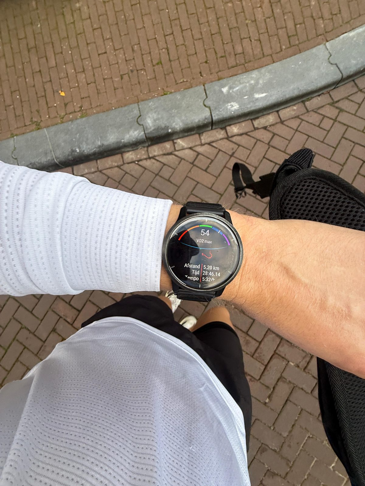

Hardlopen
Strava
Hardlopen doe ik nu al z'n 2 jaar op consistente basis. De reden hiervoor was omdat ik destijds niet fit was en ik dit wilde verandderen. Meestal begin ik de week met een run van 10km en eindig ik de week met eentje van 5km.
Waarom ik het leuk vind
Ten eerste is het heel toegangelijk, je stapt namelijk de deur uit en je kan direct beginnen met hardlopen. In amsterdam is het hardlopen ook leuk omdat er altijd vanalles om je heen gebeurt. Ten tweede vind ik het fijn om te doen om af en toe mijn hoofd leeg te maken. Wanneer je een rondje gaat rennen denk je helemaal aan niks.
Doel
Met hardlopen heb ik niet een specifiek doel zoals het lopen van een marathon. Waar ik mij vooral mee bezig houd is het verbeteren van mijn conditie. Dit doe je door vooral in zone 2 te lopen en daarbij je hartslag zo laag mogelijk te houden maar wel zo snel mogelijk probeert te lopen.